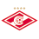
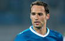
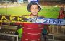
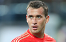

| Locomotiv Stadium, Moscow | ||
|  Spartak(M) |
4:2 |  Zenit |
|
|||||||
|  | Roman Shirokov fined for 150,000 rubles and suspended conditionally |
|  | Zenit Fans Abroad: Panikkos Efstathiou |
| Domenico Criscito called up to Italian national team for first time in 2013 | |
|  | Zenit players leave for their national teams |